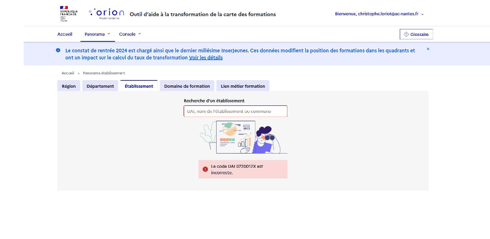
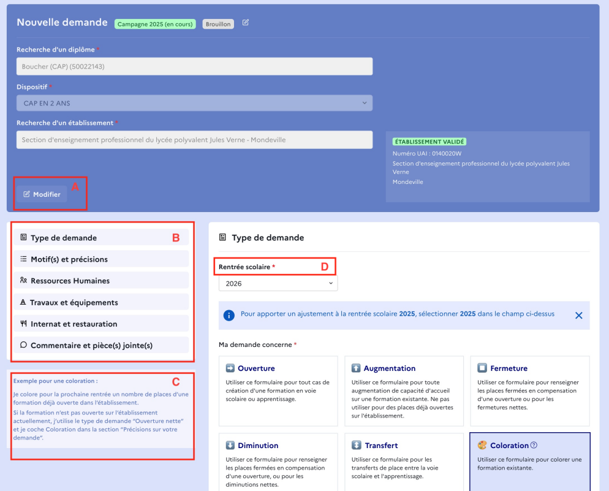

Votre compte Orion est lié à l’UAI rattaché à votre adresse e-mail. En vous connectant, vous aurez donc les accès sur Orion correspondant à cet UAI.
Si vous êtes responsables de plusieurs unités, il est possible que vous ayez des restrictions d’accès du fait d’un e-mail lié au « mauvais » UAI (ex: UAI de la section générale au lieu de celui de la section professionnelle) ;
Si la section professionnelle de votre établissement est nouvellement ouverte, ou l’établissement lui-même, il est également possible que l'UAI ne soit pas encore disponible en base de données (il sera intégré au prochain constat de rentrée).
Dans ces cas particuliers, il est possible de voir s’afficher un message d’erreur lié au code UAI, mais l'accès au reste des données d’Orion (ainsi qu’aux demandes) reste disponible.

Cas particuliers d’UAI
On peut faire modifier l’UAI associé à l'adresse e-mail en en faisant la demande à l'ADSI par le canal habituel.
Une fois cette étape validée, le formulaire entier s’affichera sous l’en-tête.
Cliquez sur Modifier pour changer votre sélection initiale de formation et/ou établissement. Les modifications dans le reste du formulaire sont conservées ;
On peut utiliser le menu latéral pour parcourir le formulaire (ou un simple défilement vertical) ;
La case d’aide contextuelle sous le menu donne des précisions ou des exemples durant toute la saisie. Cliquer sur les permet de préciser certains champs de formulaire ;
Des astérisques rouges indiquent les champs obligatoires dans le formulaire, comme c’est le cas ci-dessous pour « Rentrée Scolaire ».

Formulaire récapitulatif de la demande de transformation
Voici un aperçu de la première étape du formulaire :
Identification de la formation et du dispositif sur lesquels porte la demande ;
Identification de l’établissement.
Rechercher la formation concernée, soit par niveau de diplôme (ex : « CAP »), soit par nom de la formation, soit par code CFD.
→ Pourquoi un diplôme qu'on souhaite saisir est introuvable ?
Préciser dans le champ en dessous le dispositif concerné en nombre d’années (y compris s’il n’existe qu’une option).
Trouver l’établissement en tapant son nom, la commune ou l’UAI.
Remarque : Cas particuliers d’UAI⚓
Votre compte Orion est lié à l’UAI rattaché à votre adresse e-mail. En vous connectant, vous aurez donc les accès sur Orion correspondant à cet UAI.
Si vous êtes responsables de plusieurs unités, il est possible que vous ayez des restrictions d’accès du fait d’un e-mail lié au « mauvais » UAI (ex: UAI de la section générale au lieu de celui de la section professionnelle) ;
Si la section professionnelle de votre établissement est nouvellement ouverte, ou l’établissement lui-même, il est également possible que l'UAI ne soit pas encore disponible en base de données (il sera intégré au prochain constat de rentrée).
Dans ces cas particuliers, il est possible de voir s’afficher un message d’erreur lié au code UAI, mais l'accès au reste des données d’Orion (ainsi qu’aux demandes) reste disponible.
On peut faire modifier l’UAI associé à l'adresse e-mail en en faisant la demande à l'ADSI par le canal habituel.
Une fois cette étape validée, le formulaire entier s’affichera sous l’en-tête.
Cliquez sur
Modifierpour changer votre sélection initiale de formation et/ou établissement. Les modifications dans le reste du formulaire sont conservées ;On peut utiliser le menu latéral pour parcourir le formulaire (ou un simple défilement vertical) ;
La case d’aide contextuelle sous le menu donne des précisions ou des exemples durant toute la saisie. Cliquer sur les permet de préciser certains champs de formulaire ;
Des astérisques rouges indiquent les champs obligatoires dans le formulaire, comme c’est le cas ci-dessous pour « Rentrée Scolaire ».